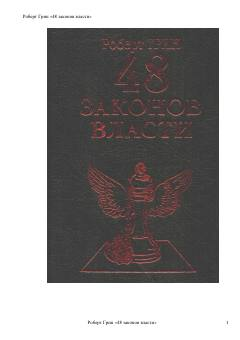

4ЗHokimiyat va ta'sir o'tkazish san'atining 48 ta qoidasi.
Kitob hokimiyat va ta'sir o'tkazish sirlarini ochib beruvchi dunyodagi eng mashhur va muhokama qilingan qo'llanmalardan biridir. Muallif tarixiy misollar va qoidalar yordamida insonlar o'rtasidagi munosabatlar va boshqaruv mexanizmlarini tahlil qiladi.